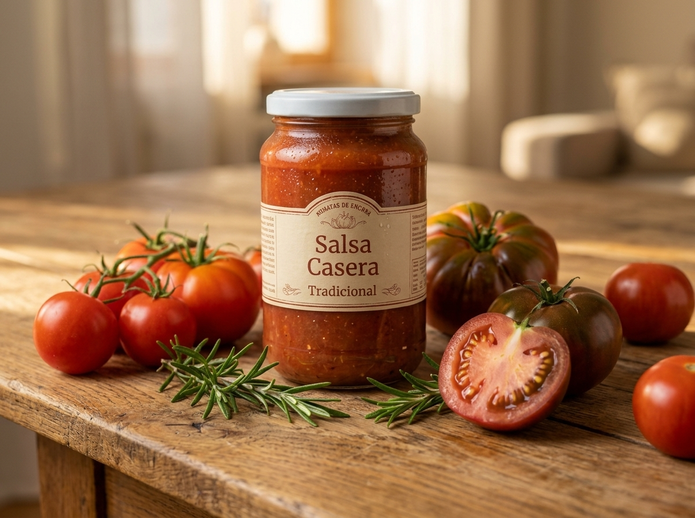
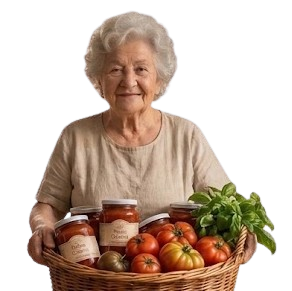

Tomates de la huerta
Elegidos uno a uno, en su punto justo de maduración.


Los Tomates de Encarna
Un solo tarro, toda la tradición. Elaborada con los mejores tomates de la huerta, paciencia y la receta secreta de mi abuela. Perfecta para cualquier plato.
Nuestra Esencia Única
Quiero probarlaElegidos uno a uno, en su punto justo de maduración.
La misma de siempre, sin atajos ni secretos a medias.
Cocinada despacio y envasada a mano, tarro a tarro.